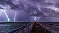

lightning

Definition: Lightning is a naturally occurring electrostatic discharge during which two electrically charged regions, both in the atmosphere or with one on the ground, temporarily neutralize themselves, causing the instantaneous release of an average of one gigajoule of energy. This discharge may produce a wide range of electromagnetic radiation, from heat created by the rapid movement of electrons, to brilliant flashes of visible light in the form of black-body radiation. Lightning causes thunder, a sound from the shock wave which develops as gases in the vicinity of the discharge experience a sudden increase in pressure. Lightning occurs commonly during thunderstorms as well as other types of energetic weather systems, but volcanic lightning can also occur during volcanic eruptions. Lightning is an atmospheric electrical phenomenon and contributes to the global atmospheric electrical circuit.
Source: Wikipedia
Wikipedia Page
Wikidata Page